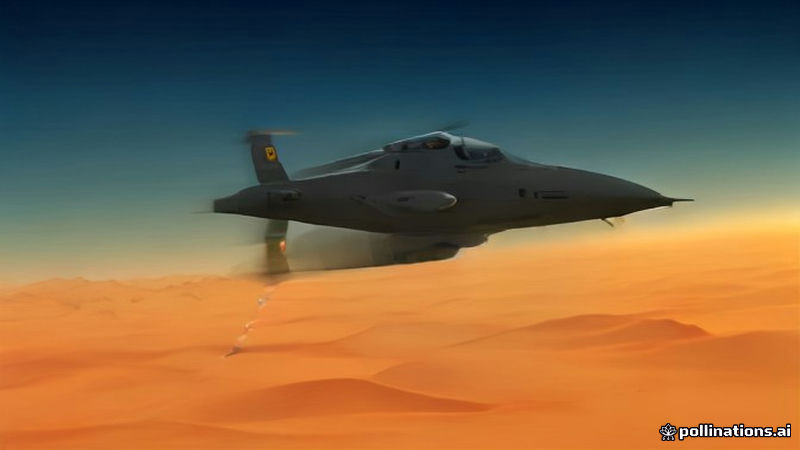

হুতিদের ক্ষেপণাস্ত্র ও ড্রোন আক্রমণ সৌদি আরবের সামরিক আধিপত্যকে চ্যালেঞ্জ
Prothom Alo · 2026-11-22
AI-generated illustrationপ্রথম আলো জানায়, ইয়েমেনের হুতি বাহিনী ধারাবাহিকভাবে সৌদি আরবকে ক্ষেপণাস্ত্র ও ড্রোনে আঘাত করে, দেশের সামরিক শীর্ষস্থানকে ক্ষুণ্ন করেছে।
সৌদি আরবকে মধ্যপ্রাচ্যের সর্বশক্তিশালী সামরিক শক্তি হিসেবে বিবেচনা করা হয়, প্রথম আলো অনুসারে।
আউটলেট উল্লেখ করে যে, ইয়েমেনের হুতি গোষ্ঠী ধারাবাহিক ক্ষেপণাস্ত্র ও ড্রোন আক্রমণ চালিয়ে সৌদি আরবকে নাজেহাল করেছে, যা তার আঞ্চলিক আধিপত্যকে চ্যালেঞ্জ করে।
Facts reported by: Prothom Alo
Read the original reporting at the links above.
Written by AI from facts reported by the outlets named above. It may contain errors; check the original reporting.Read the original reporting at the links above.
English version
Houthi missile and drone strikes challenge Saudi Arabia's military dominance
Saudi Arabia is regarded as the most powerful military force in the Middle East, according to Prothom Alo.
The outlet notes that Yemen's Houthi rebels have launched successive missile and drone attacks that have embarrassed Saudi Arabia, challenging its regional dominance.